Chapter 12 batch correction - GSM3872442 set
TODO remove libSize+batch section and keep batch regress only.
GSM3872442 is a single PBMMC sample sequenced as a pool of two libraries: SRR9264351 and SRR9264352.
We will use this sample to illustrate batch correction.
qcPlotDirBit <- "Plots/Norm" # not used TODO
projDir <- params$projDir
dirRel <- params$dirRel
outDirBit <- params$outDirBit
cacheBool <- params$cacheBool
setName <- params$setName
setSuf <- params$setSuf
if(params$bookType == "mk") {
setName <- "GSM3872442"
setSuf <- "_allCells"
dirRel <- ".."
}12.1 Prepare data
Load object
setSuf <- ""
# Read object in:
tmpFn <- sprintf("%s/%s/Robjects/%s_sce_nz_postQc%s.Rds", projDir, outDirBit, "caron", setSuf)
sce <- readRDS(tmpFn)Select the GSM3872442 cells:
sample1.nz.sce <- SingleCellExperiment(list(counts=counts(sce[, sce$Run %in% c("SRR9264351")])),
colData=colData(sce[, sce$Run %in% c("SRR9264351")]))
sample2.nz.sce <- SingleCellExperiment(list(counts=counts(sce[, sce$Run %in% c("SRR9264352")])),
colData=colData(sce[, sce$Run %in% c("SRR9264352")]))12.2 Normalise each separately and re-pool
sample1.clusters <- quickCluster(sample1.nz.sce, method="igraph")
sample1.nz.sce <- computeSumFactors(sample1.nz.sce, min.mean=0.1, cluster=sample1.clusters)
sample1.nz.sce <- logNormCounts(sample1.nz.sce)
sample2.clusters <- quickCluster(sample2.nz.sce, method="igraph")
sample2.nz.sce <- computeSumFactors(sample2.nz.sce, min.mean=0.1, cluster=sample2.clusters)
sample2.nz.sce <- logNormCounts(sample2.nz.sce)
rm(sample1.clusters, sample2.clusters)Re-pool:
# recombine the normalized samples together
all.samp.exprs <- do.call(cbind,
list("SRR9264351"=exprs(sample1.nz.sce),
"SRR9264352"=exprs(sample2.nz.sce)))
colnames(all.samp.exprs) <- c(as.character(colData(sample1.nz.sce)$Barcode),
as.character(colData(sample2.nz.sce)$Barcode))For the PCA we want to quickly select the genes that are most informative. We will use the top 2000 genes with the highest variance.
gene.variances <- apply(all.samp.exprs, 1, var)
names(gene.variances) <- rownames(all.samp.exprs)
highly.variable.genes <- names(gene.variances[order(gene.variances, decreasing=TRUE)])[1:2000]
rm(gene.variances)Perform PCA:
# we need to use a fast approximate algorithm for PCA on large data sets
# this algorithm has a stochastic component,
# so we need to fix the seed number to get the same result each time
set.seed(42)
separate.hvg.pca <- irlba::prcomp_irlba(t(all.samp.exprs[highly.variable.genes, ]), n=5) # we only need a few components
separate.hvg.pcs <- as.data.frame(separate.hvg.pca$x) # extract the principal components
separate.hvg.pcs$Cell <- colnames(all.samp.exprs) # set the sample column as the cell IDs
# combine the PCs with the sample information into a single data frame for plotting
samples.info <- data.frame("Cell"=colnames(all.samp.exprs),
"Run"=c(rep("SRR9264351", ncol(sample1.nz.sce)),
rep("SRR9264352", ncol(sample2.nz.sce))))
# merge the two data frames together
separate.pca.merge <- merge(separate.hvg.pcs, samples.info, by='Cell')
# tidy
rm(all.samp.exprs, separate.hvg.pca, separate.hvg.pcs, samples.info)Plot PC1-PC2 plane, with cells colored by ‘Run’ (and sized according to library size):
sce.sep <- cbind(sample1.nz.sce, sample2.nz.sce)
rm(sample1.nz.sce, sample2.nz.sce)
sce.sep <- runPCA(sce.sep)
plotPCA(sce.sep, colour_by="Run", size_by = "sum")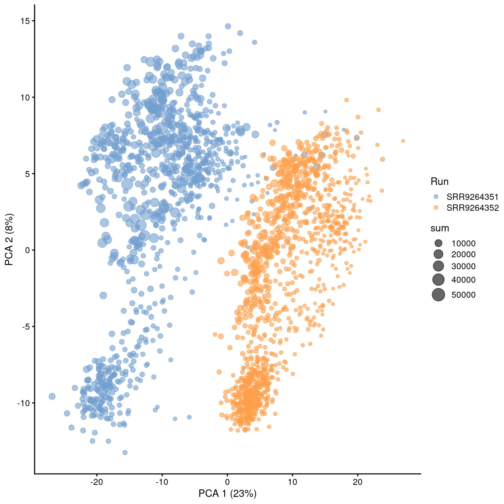

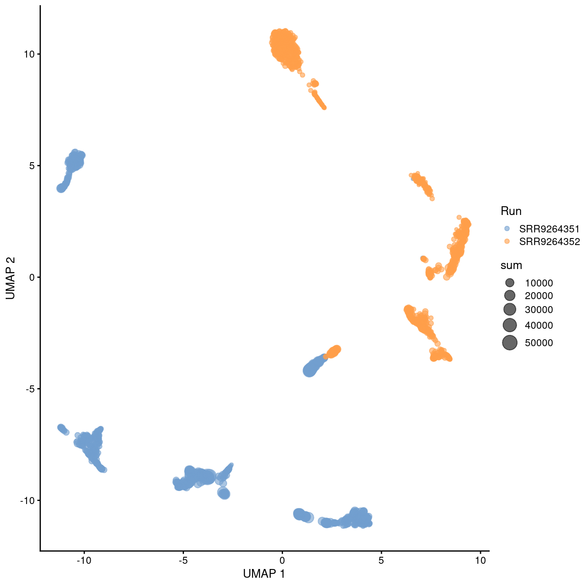
12.3 Normalise batches together
sample3.nz.sce <- SingleCellExperiment(list(counts=counts(sce[, sce$Run %in% c("SRR9264351", "SRR9264352")])),
colData=colData(sce[, sce$Run %in% c("SRR9264351", "SRR9264352")]))
sample3.clusters <- quickCluster(sample3.nz.sce, method="igraph")
sample3.nz.sce <- computeSumFactors(sample3.nz.sce, min.mean=0.1, cluster=sample3.clusters)
sample3.nz.sce <- logNormCounts(sample3.nz.sce)
pool.exprs <- exprs(sample3.nz.sce)
colnames(pool.exprs) <- gsub(colData(sample3.nz.sce)$Barcode, pattern="-", replacement=".")
rm(sample3.clusters, sce)Find the 2000 genes with the highest variance:
gene.variances <- apply(pool.exprs, 1, var)
names(gene.variances) <- rownames(pool.exprs)
highly.variable.genes <- names(gene.variances[order(gene.variances, decreasing=TRUE)])[1:2000]
rm(gene.variances)Perform PCA:
# we need to use a fast approximate algorithm for PCA on large data sets
# this algorithm has a stochastic component, so we need to fix the seed number to get the same result each time
set.seed(42)
combined.hvg.pca <- irlba::prcomp_irlba(t(pool.exprs[highly.variable.genes, ]), n=5) # we only need a few components
combined.hvg.pcs <- as.data.frame(combined.hvg.pca$x) # extract the principal components
combined.hvg.pcs$Cell <- colnames(pool.exprs) # set the sample column as the cell IDs
# combine the PCs with the sample information into a single data frame for plotting
samples.info <- data.frame("Cell"=colnames(pool.exprs),
"Run"=colData(sample3.nz.sce)$Run)
# merge the two data frames together
combined.pca.merge <- merge(combined.hvg.pcs, samples.info, by='Cell')
rm(all.samp.exprs, combined.hvg.pca, combined.hvg.pcs, samples.info)Plot PC1-PC2 plane, with cells colored by ‘Run’ (and sized according to library size):
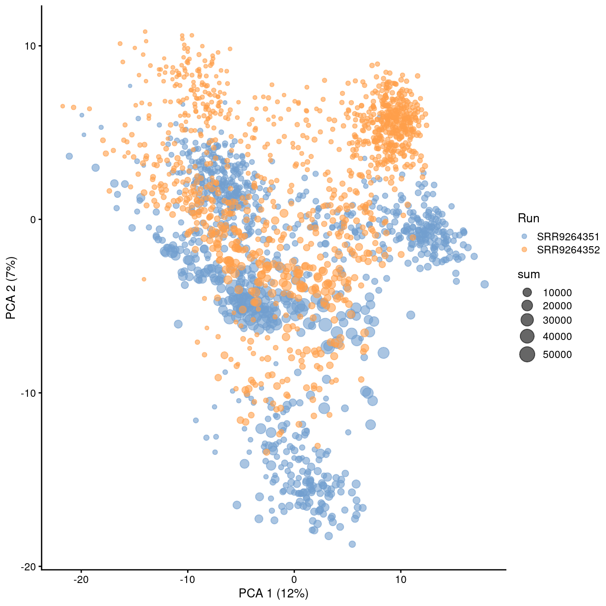
sample3.nz.sce <- runTSNE(sample3.nz.sce, dimred="PCA")
plotTSNE(sample3.nz.sce, colour_by="Run", size_by = "sum")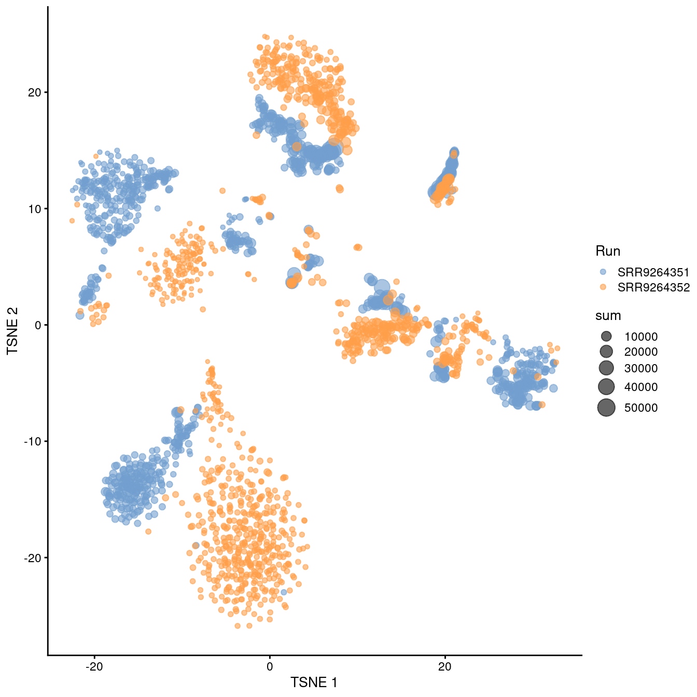
sample3.nz.sce <- runUMAP(sample3.nz.sce, dimred="PCA")
plotUMAP(sample3.nz.sce, colour_by="Run", size_by = "sum")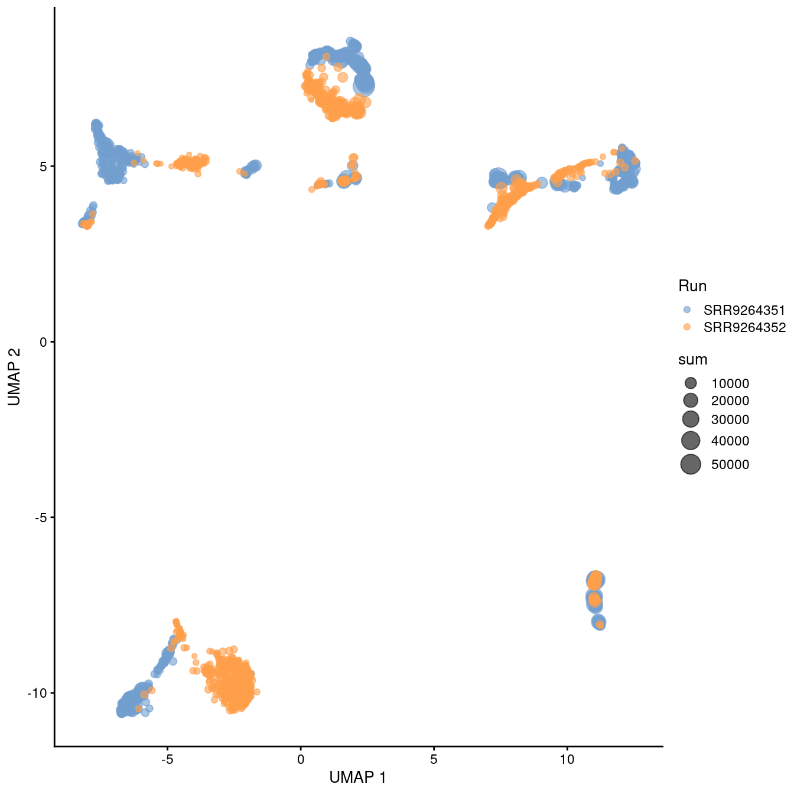
12.4 Batch correction
sample3.nz.sce$Run <- factor(sample3.nz.sce$Run)
sample3.nz.sce$batch <- sample3.nz.sce$Run
sce <- sample3.nz.sce12.4.1 Gaussian (normal) linear models
Limma
suppressMessages(require(limma))
lm_design_batch <- model.matrix(~0 + batch, data = colData(sce))
fit_lm_batch <- lmFit(logcounts(sce), lm_design_batch)
resids_lm_batch <- residuals(fit_lm_batch, logcounts(sce))
assay(sce, "lm_batch") <- resids_lm_batch
reducedDim(sce, "PCA_lm_batch") <- reducedDim(
runPCA(sce, exprs_values = "lm_batch"), "PCA")
plotReducedDim(sce, dimred = "PCA_lm_batch",
colour_by = "batch",
size_by = "sum",
shape_by = "Sample.Name"
) +
ggtitle("LM - regress out batch")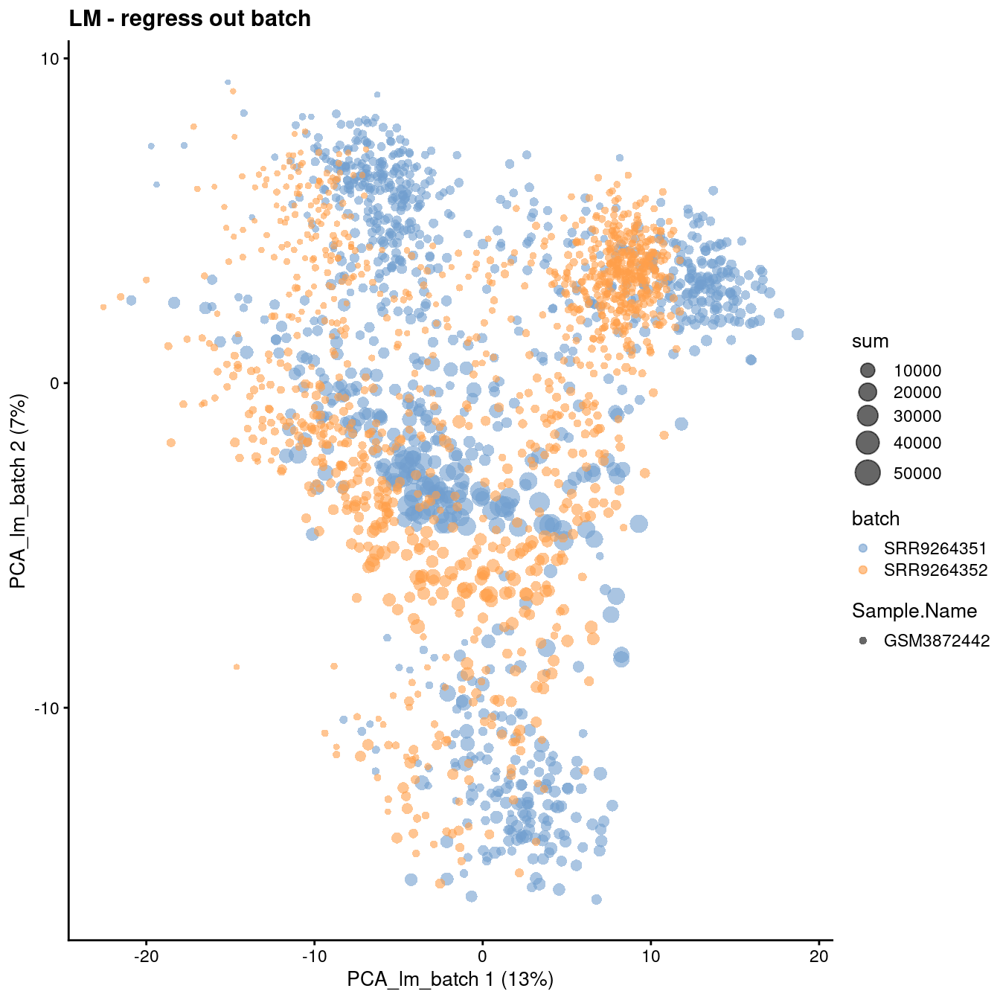
12.5 SCTransform
12.5.1 Batch only
First make a copy of the SCE object (we will need one later).
# have log lib size
sce$log10sum <- log10(sce$sum)
# keep copy of SCE to draw from after SCTransform,
# which discard some genes TODO check-again/mention slow 'return all' option
sceOrig <- sce## [1] "dgCMatrix"
## attr(,"package")
## [1] "Matrix"if(FALSE) # dev
{
# https://rawgit.com/ChristophH/sctransform/supp_html/supplement/variance_stabilizing_transformation.html
# https://s3-us-west-2.amazonaws.com/10x.files/samples/cell/pbmc3k/pbmc3k_filtered_gene_bc_matrices.tar.gz
setwd("/ssd/personal/baller01/20200511_FernandesM_ME_crukBiSs2020/Scripts/BookDownDevSrv008")
getwd()
dir()
counts <- Read10X(data.dir = "filtered_gene_bc_matrices/hg19/") # Seurat function to read in 10x count data
getwd()
}
# inspect data
gene_attr <- data.frame(mean = rowMeans(counts),
detection_rate = rowMeans(counts > 0),
var = apply(counts, 1, var))
gene_attr$log_mean <- log10(gene_attr$mean)
gene_attr$log_var <- log10(gene_attr$var)
rownames(gene_attr) <- rownames(counts)
cell_attr <- data.frame(n_umi = colSums(counts),
n_gene = colSums(counts > 0))
rownames(cell_attr) <- colnames(counts)
# plot
ggplot(gene_attr, aes(log_mean, log_var)) +
geom_point(alpha = 0.3, shape = 16) +
geom_density_2d(size = 0.3) +
geom_abline(intercept = 0, slope = 1, color = "red")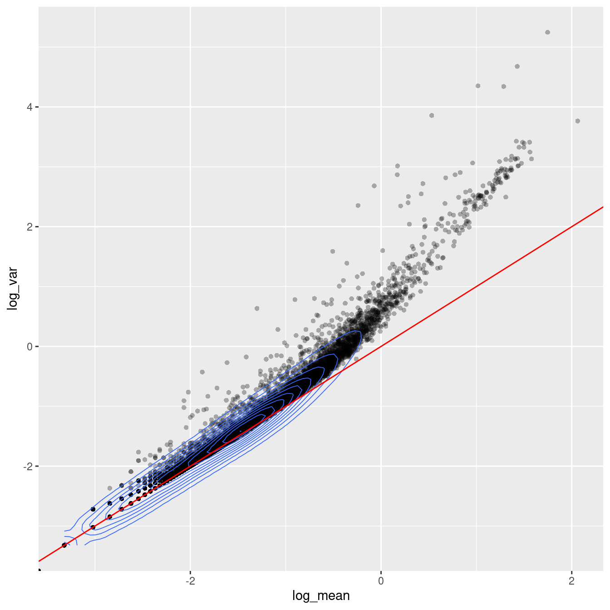
Mean-variance relationship
# Mean-variance relationship
# add the expected detection rate under Poisson model
x = seq(from = -3, to = 2, length.out = 1000)
poisson_model <- data.frame(log_mean = x, detection_rate = 1 - dpois(0, lambda = 10^x))
ggplot(gene_attr, aes(log_mean, detection_rate)) + geom_point(alpha = 0.3, shape = 16) +
geom_line(data = poisson_model, color = "red") + theme_gray(base_size = 8)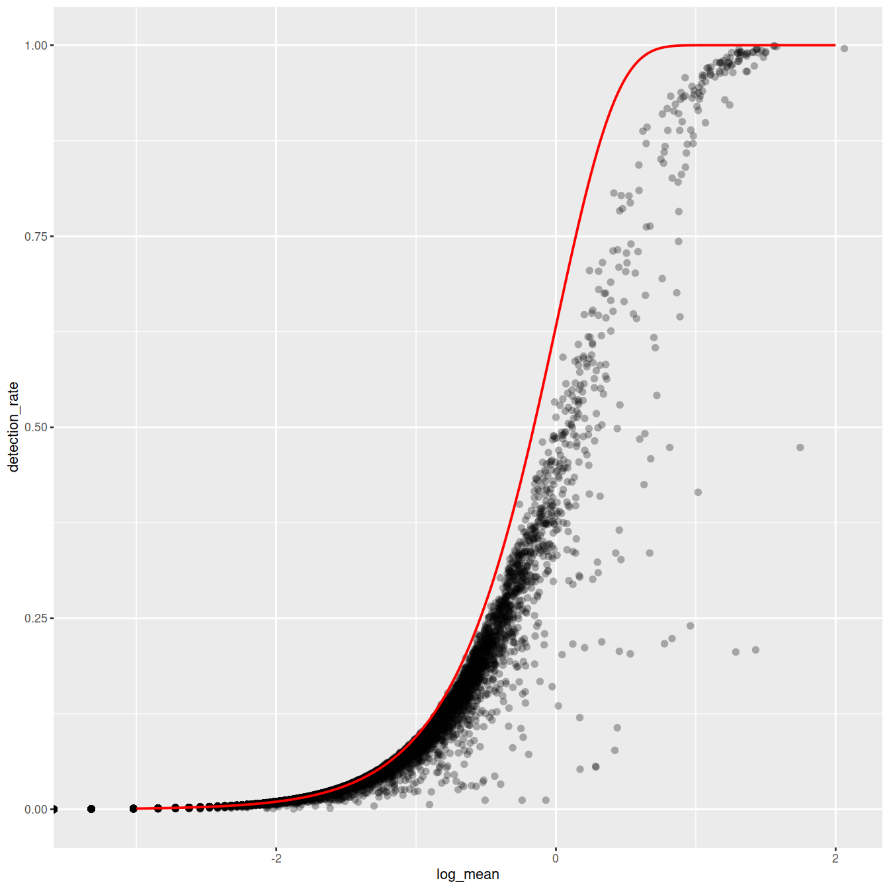
Mean-detection-rate relationship
# Mean-detection-rate relationship
ggplot(cell_attr, aes(n_umi, n_gene)) +
geom_point(alpha = 0.3, shape = 16) +
geom_density_2d(size = 0.3)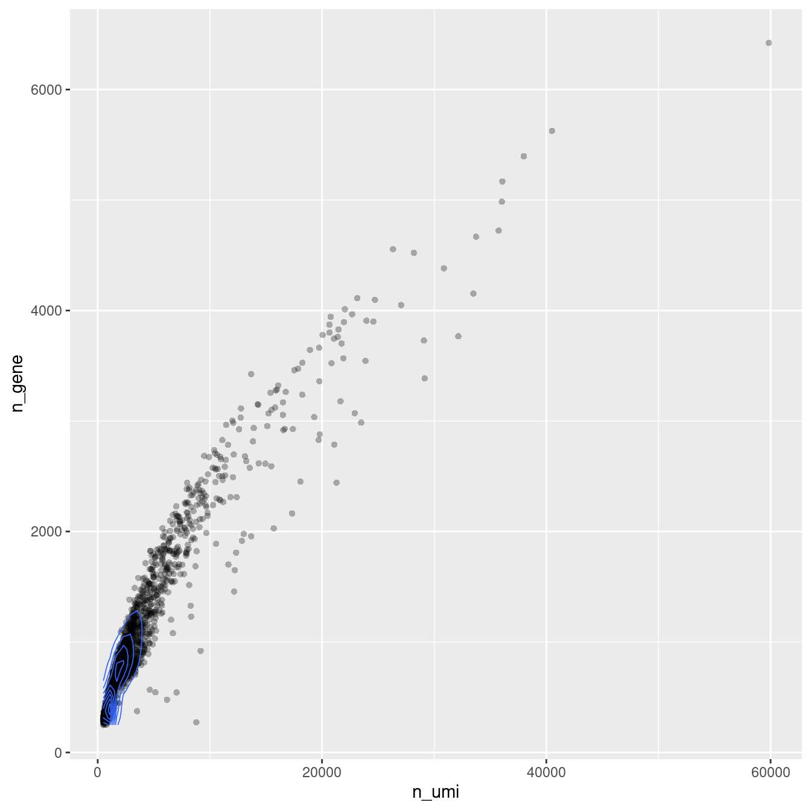
counts <- counts(sce)
colnames(counts) <- colData(sce)$Barcode
cellAttr <- as.data.frame(colData(sce))[,c("log10sum", "batch")]
rownames(cellAttr) <- colData(sce)$Barcode
#https://github.com/satijalab/seurat/issues/3925
# remotes::install_github("ChristophH/sctransform@develop")
### Genes expressed in at least 5 cells will be kept
sctnorm_data <- sctransform::vst(umi = counts,
min_cells = 5,
#min_cells = 10,
#method = "nb_fast",
#n_genes = 3000,
#bw_adjust = 2, # 3
cell_attr = cellAttr,
latent_var = c("batch"),
#latent_var = c("log10sum", "batch"),
return_gene_attr = TRUE,
return_cell_attr = TRUE,
verbosity = 0)Check model used:
## [1] "y ~ batch"Check new values (here 3 rows and 3 columns only):
## AAACCTGCACTTCGAA-9 AAACCTGCAGACGCAA-9 AAACCTGTCATCACCC-9
## ENSG00000237491 -0.1805847 -0.1805847 -0.1805847
## ENSG00000225880 -0.1052960 -0.1052960 -0.1052960
## ENSG00000230368 -0.1977572 -0.1977572 -0.1977572Check object:
## class: SingleCellExperiment
## dim: 16629 2099
## metadata(0):
## assays(3): counts logcounts lm_batch
## rownames(16629): ENSG00000237491 ENSG00000225880 ... ENSG00000275063
## ENSG00000271254
## rowData names(0):
## colnames: NULL
## colData names(18): Barcode Run ... batch log10sum
## reducedDimNames(4): PCA TSNE UMAP PCA_lm_batch
## altExpNames(0):Some genes were not included in the transformation and excluded from the output, so we will remove them from the SCE object too.
# exclude genes that were not used in the transformation:
tmpInd <- which(rownames(sce) %in% rownames(sctnorm_data$y))
cols.meta <- colData(sceOrig)
rows.meta <- rowData(sceOrig)
new.counts <- counts(sceOrig)[tmpInd, ]
sce <- SingleCellExperiment(list(counts=new.counts))
# reset the column data on the new object
colData(sce) <- cols.meta
rowData(sce) <- rows.meta[tmpInd, ]We now copy the transformation output to the SCE object:
## [1] TRUE## [1] 13784 2099colnames(vstMat) <- NULL
assay(sce, "sctrans_norm_batchOnly") <- vstMat # as(vst_out$y[rownames(sce),], "dgCMatrix")Also copy ‘logcounts’:
Diagnostic plots are shown below:
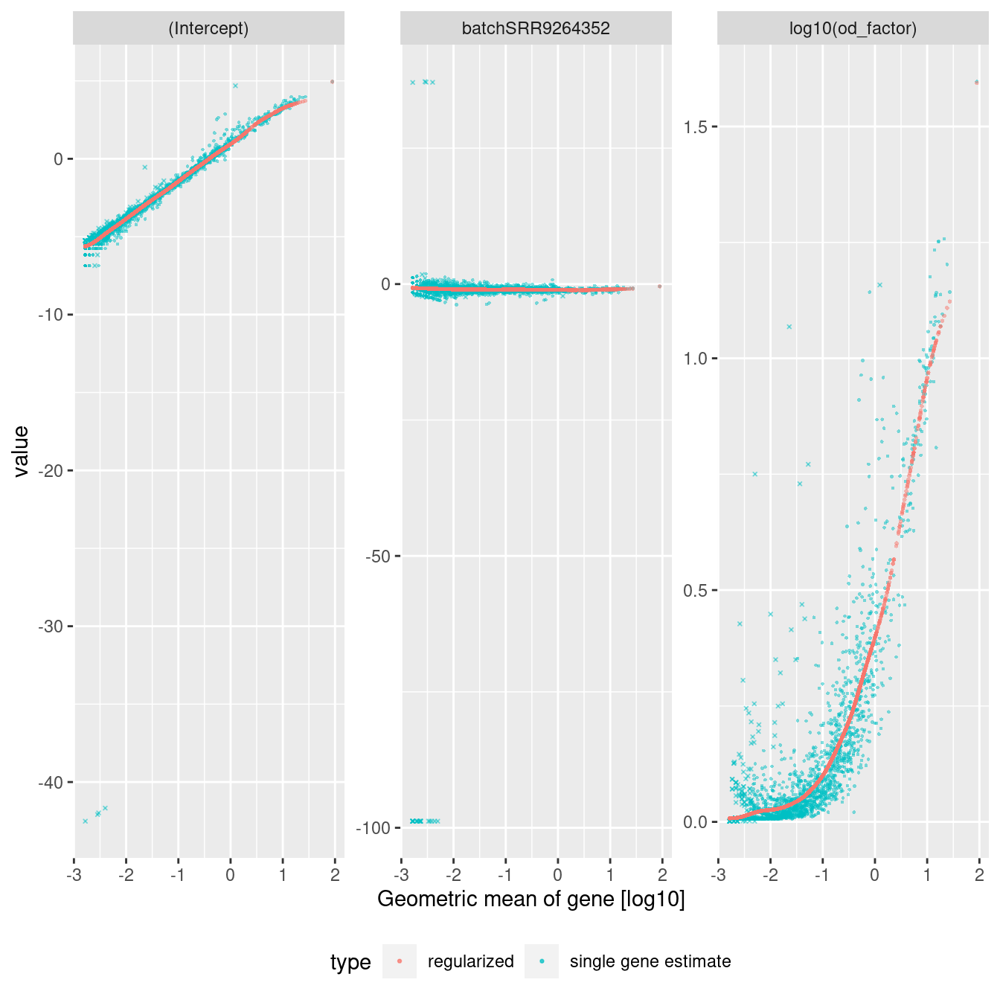
The reduced dimension plots below show improved mixing of cells from the two sets:
reducedDim(sce, "PCA_sctrans_norm_batchOnly") <- reducedDim(
runPCA(sce, exprs_values = "sctrans_norm_batchOnly"), "PCA"
)
plotReducedDim(
sce,
dimred = "PCA_sctrans_norm_batchOnly",
colour_by = "batch",
size_by = "sum",
shape_by = "Sample.Name"
) + ggtitle("PCA plot: sctransform normalization - batch only") 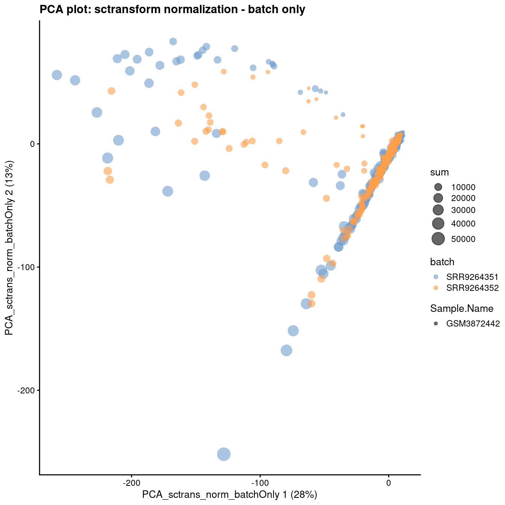
sce <- runTSNE(sce, dimred="PCA_sctrans_norm_batchOnly", name="TSNE_sctrans_norm_batchOnly")
plotReducedDim(
sce,
dimred = "TSNE_sctrans_norm_batchOnly",
colour_by = "batch",
size_by = "sum",
shape_by = "Sample.Name"
) + ggtitle("TSNE plot: sctransform normalization - batch only") 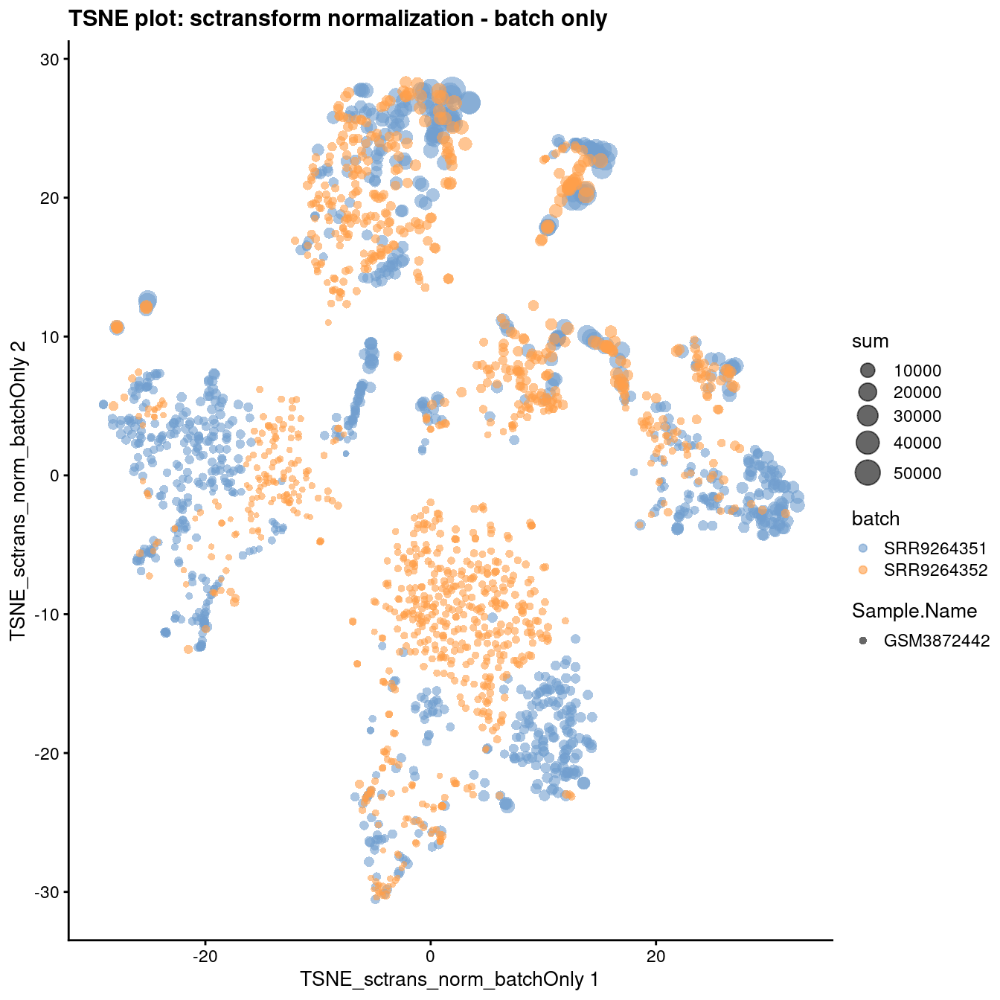
sce <- runUMAP(sce, dimred="PCA_sctrans_norm_batchOnly", name="UMAP_sctrans_norm_batchOnly")
plotReducedDim(
sce,
dimred = "UMAP_sctrans_norm_batchOnly",
colour_by = "batch",
size_by = "sum",
shape_by = "Sample.Name"
) + ggtitle("UMAP plot: sctransform normalization - batch only") 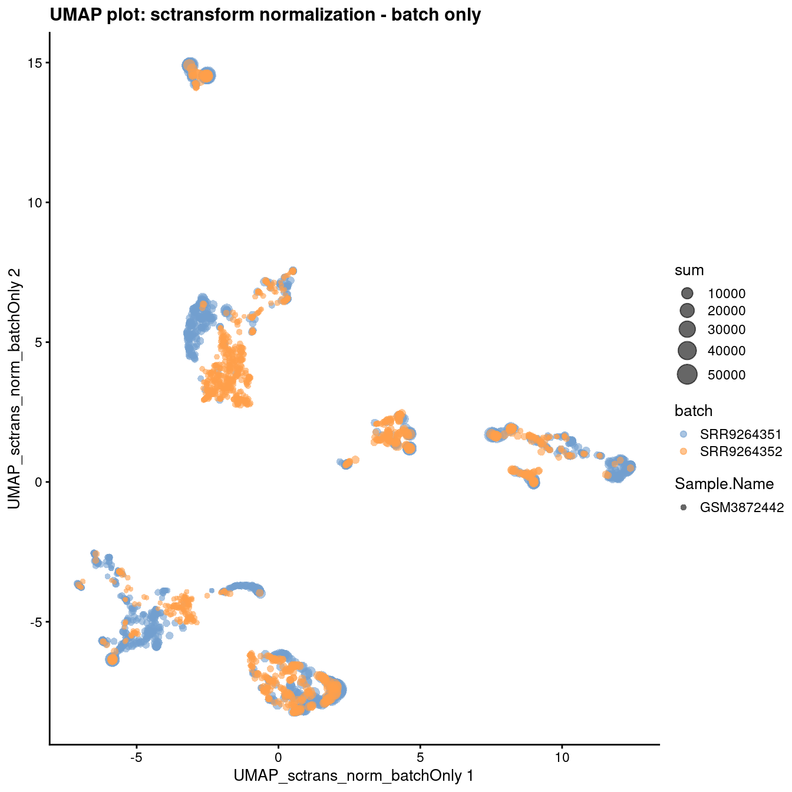
Keep copy of SCE object for later:
12.5.2 Both library size and batch
Use the copy of the SCE object made earlier.
Some cells are very different from the rest.
counts <- counts(sce)
colnames(counts) <- colData(sce)$Barcode
#cellAttr <- as.data.frame(colData(sce))[,c("log10sum", "batch")]
cellAttr <- as.data.frame(colData(sce))
rownames(cellAttr) <- colData(sce)$Barcode
sctnorm_data <- sctransform::vst(umi = counts,
min_cells = 5,
#min_cells = 10,
#method = "nb_fast",
#n_genes = 3000,
#bw_adjust = 2, # 3
cell_attr = cellAttr,
latent_var = c("log10sum", "batch"),
#latent_var = c("batch"),
return_gene_attr = TRUE,
return_cell_attr = TRUE,
verbosity = 0)
sctransform::plot_model_pars(sctnorm_data)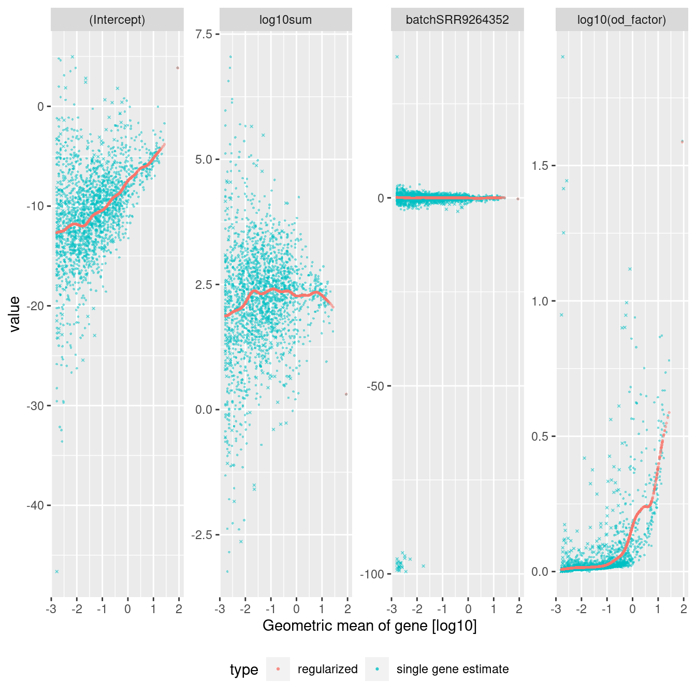
# exclude genes that were not used in the transformation:
tmpInd <- which(rownames(sce) %in% rownames(sctnorm_data$y))
cols.meta <- colData(sceOrig)
rows.meta <- rowData(sceOrig)
new.counts <- counts(sceOrig)[tmpInd, ]
sce <- SingleCellExperiment(list(counts=new.counts))
# reset the column data on the new object
colData(sce) <- cols.meta
rowData(sce) <- rows.meta[tmpInd, ]
# We now copy the transformation output to the SCE object:
vstMat <- as(sctnorm_data$y[rownames(sce),], "dgCMatrix")
all(colnames(vstMat) == sce$Barcode)## [1] TRUE## [1] 13784 2099colnames(vstMat) <- NULL
assay(sce, "sctrans_norm_libSizeBatch0") <- vstMat # as(vst_out$y[rownames(sce),], "dgCMatrix")
#Also copy 'logcounts':
assayX <- "logcounts"
tmpAssay <- assay(sceOrig, assayX)
assay(sce, assayX) <- tmpAssay[tmpInd, ]
reducedDim(sce, "PCA_sctrans_norm_libSizeBatch0") <- reducedDim(
runPCA(sce,
exprs_values = "sctrans_norm_libSizeBatch0"),
"PCA"
)
plotReducedDim(
sce,
dimred = "PCA_sctrans_norm_libSizeBatch0",
colour_by = "batch",
size_by = "sum",
shape_by = "Sample.Name"
) + ggtitle("PCA plot: sctransform normalization - libSizeBatch0")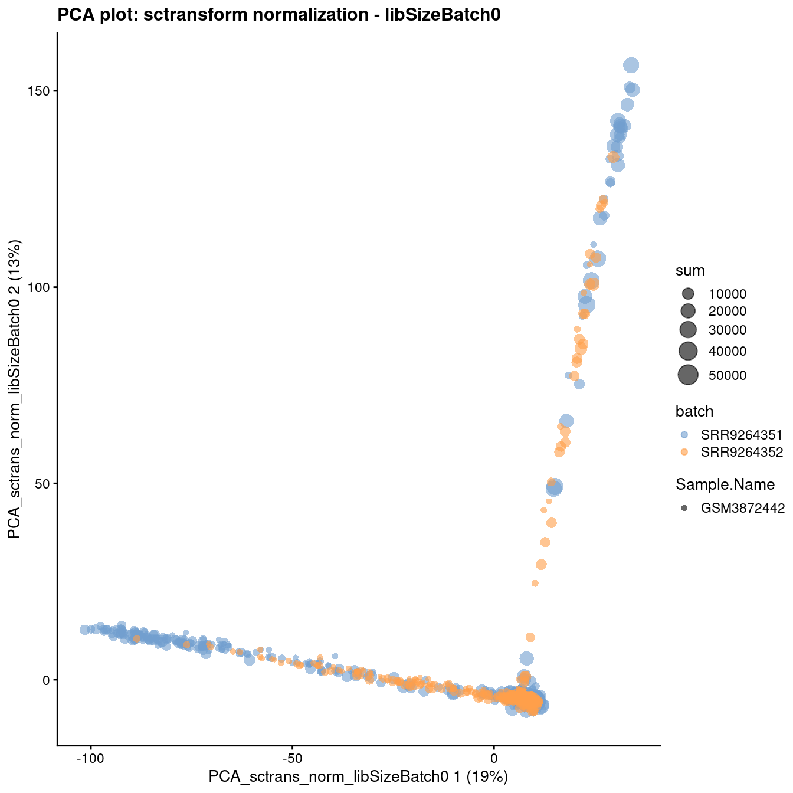
sce <- sceOrig
require(Seurat)
# use Seurat's SCTransform
sce.srt <- as.Seurat(sce)
sce.srt <- SCTransform(sce.srt,
min_cells = 5,
vars.to.regress = c("log10sum", "batch"),
#vars.to.regress = c("batch"),
# Variables to regress out in a second non-regularized linear regression
# so log10sum is redundant here ...
return_gene_attr = TRUE,
return_cell_attr = TRUE,
#show_progress = FALSE,
verbose = FALSE,
verbosity = 0
)
str(sce.srt[["SCT"]])## Formal class 'SCTAssay' [package "Seurat"] with 9 slots
## ..@ SCTModel.list:List of 1
## .. ..$ model1:Formal class 'SCTModel' [package "Seurat"] with 6 slots
## .. .. .. ..@ feature.attributes:'data.frame': 13784 obs. of 12 variables:
## .. .. .. .. ..$ detection_rate : num [1:13784] 0.0243 0.0081 0.02906 0.00333 0.10195 ...
## .. .. .. .. ..$ gmean : num [1:13784] 0.01718 0.00596 0.02074 0.00231 0.08436 ...
## .. .. .. .. ..$ variance : num [1:13784] 0.02512 0.01183 0.03103 0.00333 0.22363 ...
## .. .. .. .. ..$ residual_mean : num [1:13784] 0.02914 0.01863 -0.01525 0.00311 0.01306 ...
## .. .. .. .. ..$ residual_variance : num [1:13784] 1.341 1.403 0.759 0.922 1.081 ...
## .. .. .. .. ..$ theta : num [1:13784] 0.461 0.2 0.536 0.128 1.284 ...
## .. .. .. .. ..$ (Intercept) : num [1:13784] -11.7 -12.2 -11.5 -12.5 -10.3 ...
## .. .. .. .. ..$ log_umi : num [1:13784] 2.27 2.11 2.28 1.91 2.33 ...
## .. .. .. .. ..$ genes_log_gmean_step1: logi [1:13784] FALSE FALSE TRUE FALSE FALSE FALSE ...
## .. .. .. .. ..$ step1_theta : num [1:13784] NA NA 0.933 NA NA ...
## .. .. .. .. ..$ step1_(Intercept) : num [1:13784] NA NA -13 NA NA ...
## .. .. .. .. ..$ step1_log_umi : num [1:13784] NA NA 2.67 NA NA ...
## .. .. .. ..@ cell.attributes :'data.frame': 2099 obs. of 3 variables:
## .. .. .. .. ..$ umi : num [1:2099] 2160 2291 3349 3728 596 ...
## .. .. .. .. ..$ log_umi : num [1:2099] 3.33 3.36 3.52 3.57 2.78 ...
## .. .. .. .. ..$ cells_step1: logi [1:2099] TRUE TRUE TRUE TRUE TRUE TRUE ...
## .. .. .. ..@ clips :List of 2
## .. .. .. .. ..$ vst: num [1:2] -45.8 45.8
## .. .. .. .. ..$ sct: num [1:2] -8.36 8.36
## .. .. .. ..@ umi.assay : chr "RNA"
## .. .. .. ..@ model : chr "y ~ log_umi"
## .. .. .. ..@ arguments :List of 25
## .. .. .. .. ..$ latent_var : chr "log_umi"
## .. .. .. .. ..$ batch_var : NULL
## .. .. .. .. ..$ latent_var_nonreg : NULL
## .. .. .. .. ..$ n_genes : num 2000
## .. .. .. .. ..$ n_cells : num 2099
## .. .. .. .. ..$ method : chr "poisson"
## .. .. .. .. ..$ do_regularize : logi TRUE
## .. .. .. .. ..$ theta_regularization: chr "od_factor"
## .. .. .. .. ..$ res_clip_range : num [1:2] -45.8 45.8
## .. .. .. .. ..$ bin_size : num 500
## .. .. .. .. ..$ min_cells : num 5
## .. .. .. .. ..$ residual_type : chr "pearson"
## .. .. .. .. ..$ return_cell_attr : logi TRUE
## .. .. .. .. ..$ return_gene_attr : logi TRUE
## .. .. .. .. ..$ return_corrected_umi: logi TRUE
## .. .. .. .. ..$ min_variance : num -Inf
## .. .. .. .. ..$ bw_adjust : num 3
## .. .. .. .. ..$ gmean_eps : num 1
## .. .. .. .. ..$ theta_estimation_fun: chr "theta.ml"
## .. .. .. .. ..$ theta_given : NULL
## .. .. .. .. ..$ verbosity : num 0
## .. .. .. .. ..$ verbose : NULL
## .. .. .. .. ..$ show_progress : NULL
## .. .. .. .. ..$ sct.clip.range : num [1:2] -8.36 8.36
## .. .. .. .. ..$ sct.method : chr "default"
## ..@ counts :Formal class 'dgCMatrix' [package "Matrix"] with 6 slots
## .. .. ..@ i : int [1:1465665] 20 58 67 86 157 177 199 201 210 211 ...
## .. .. ..@ p : int [1:2100] 0 834 1702 2384 3476 3853 4657 5325 6049 6551 ...
## .. .. ..@ Dim : int [1:2] 13784 2099
## .. .. ..@ Dimnames:List of 2
## .. .. .. ..$ : chr [1:13784] "ENSG00000237491" "ENSG00000225880" "ENSG00000230368" "ENSG00000230699" ...
## .. .. .. ..$ : chr [1:2099] "cell_1" "cell_2" "cell_3" "cell_4" ...
## .. .. ..@ x : num [1:1465665] 1 1 4 1 1 1 1 14 2 1 ...
## .. .. ..@ factors : list()
## ..@ data :Formal class 'dgCMatrix' [package "Matrix"] with 6 slots
## .. .. ..@ i : int [1:1465665] 20 58 67 86 157 177 199 201 210 211 ...
## .. .. ..@ p : int [1:2100] 0 834 1702 2384 3476 3853 4657 5325 6049 6551 ...
## .. .. ..@ Dim : int [1:2] 13784 2099
## .. .. ..@ Dimnames:List of 2
## .. .. .. ..$ : chr [1:13784] "ENSG00000237491" "ENSG00000225880" "ENSG00000230368" "ENSG00000230699" ...
## .. .. .. ..$ : chr [1:2099] "cell_1" "cell_2" "cell_3" "cell_4" ...
## .. .. ..@ x : num [1:1465665] 0.693 0.693 1.609 0.693 0.693 ...
## .. .. ..@ factors : list()
## ..@ scale.data : num [1:3000, 1:2099] -0.1647 -0.06593 -0.02594 -0.00907 -0.13346 ...
## .. ..- attr(*, "dimnames")=List of 2
## .. .. ..$ : chr [1:3000] "ENSG00000237491" "ENSG00000225880" "ENSG00000188290" "ENSG00000131591" ...
## .. .. ..$ : chr [1:2099] "cell_1" "cell_2" "cell_3" "cell_4" ...
## ..@ key : chr "sct_"
## ..@ assay.orig : chr "RNA"
## ..@ var.features : chr [1:3000] "ENSG00000090382" "ENSG00000143546" "ENSG00000163220" "ENSG00000257764" ...
## ..@ meta.features:'data.frame': 13784 obs. of 0 variables
## ..@ misc : Named list()##sce.srt[["SCT"]]@misc
# https://hbctraining.github.io/scRNA-seq/lessons/06_SC_SCT_and_integration.html
#GetAssay(sce.srt, assay = "SCT")@misc$vst.out
##sce.srt[["SCT"]]@scale.data %>% head()Check model used:
#print(sce.srt[["SCT"]]@misc$vst.out$model_str) # sctransform::vst
print(sce.srt[["SCT"]]@SCTModel.list$model1@model) # Seurat::SCTransform## [1] "y ~ log_umi"Discard genes that were not used in the transformation.
# exclude genes that were not used in the transformation:
tmpInd <- which(rownames(sce) %in% rownames(sce.srt[["SCT"]]@scale.data))
cols.meta <- colData(sceOrig)
rows.meta <- rowData(sceOrig)
new.counts <- counts(sceOrig)[tmpInd, ]
sce <- SingleCellExperiment(list(counts=new.counts))
# reset the column data on the new object
colData(sce) <- cols.meta
rowData(sce) <- rows.meta[tmpInd, ]
# tidy
rm(sceOrig)Copy the transformation output to the SCE object.
vstMat <- as(sce.srt[["SCT"]]@scale.data[rownames(sce),], "dgCMatrix")
#all(colnames(vstMat) == sce$Barcode)
dd <- sce.srt@meta.data %>%
dplyr::select(Barcode)
# check order of cells are identical
all(dd[colnames(vstMat), "Barcode"] == sce$Barcode)## [1] TRUEShow diagnostic plots:
#sctransform::plot_model_pars(sce.srt[["SCT"]]@misc$vst.out) # sctransform::vst
# not with Seurat::SCTransform ... empty sce.srt[["SCT"]]@misc 20200422
rm(sce.srt)Show reduced dimension plots and check for improved mixing of cells from the two sets:
reducedDim(sce, "PCA_sctrans_norm") <- reducedDim(
runPCA(sce, exprs_values = "sctrans_norm")
)
plotReducedDim(
sce,
dimred = "PCA_sctrans_norm",
colour_by = "batch",
size_by = "sum",
shape_by = "Sample.Name"
) + ggtitle("PCA plot: sctransform normalization") 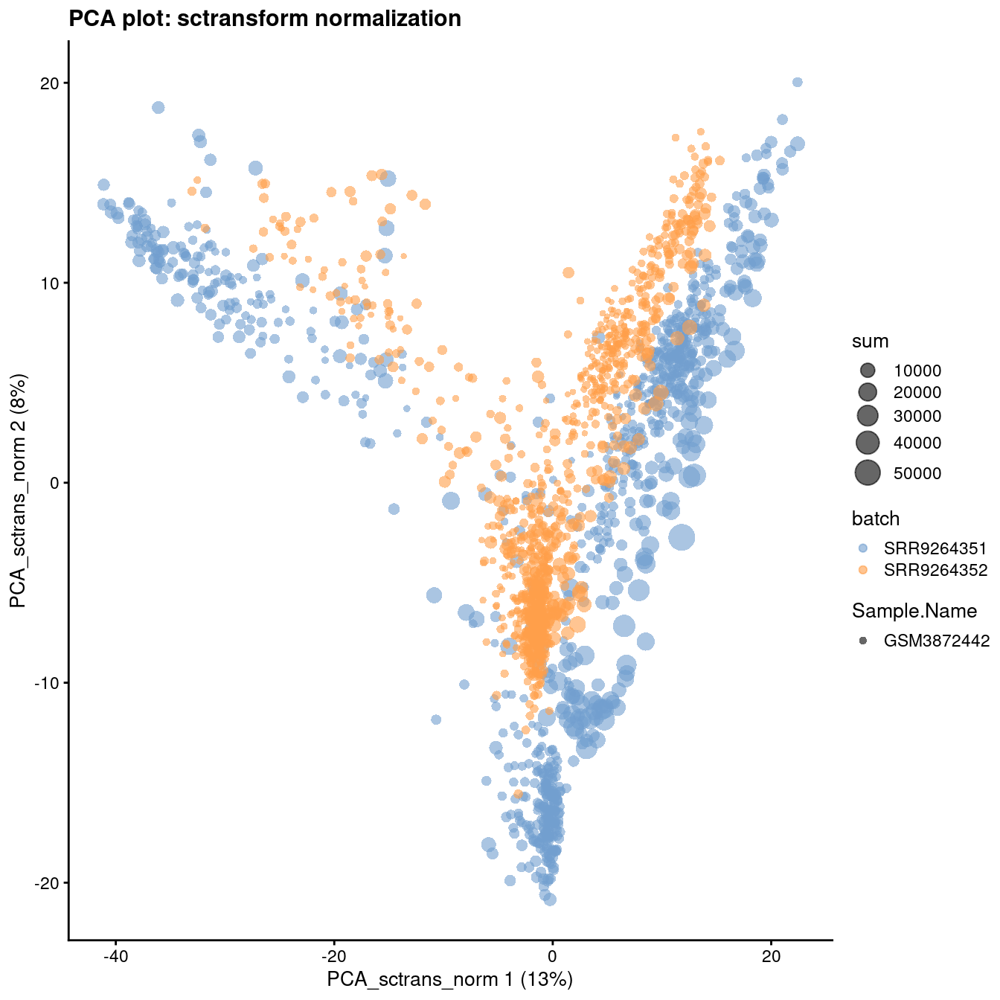
sce <- runTSNE(sce, dimred="PCA_sctrans_norm", name="TSNE_sctrans_norm")
plotReducedDim(
sce,
dimred = "TSNE_sctrans_norm",
colour_by = "batch",
size_by = "sum",
shape_by = "Sample.Name"
) + ggtitle("TSNE plot: sctransform normalization") 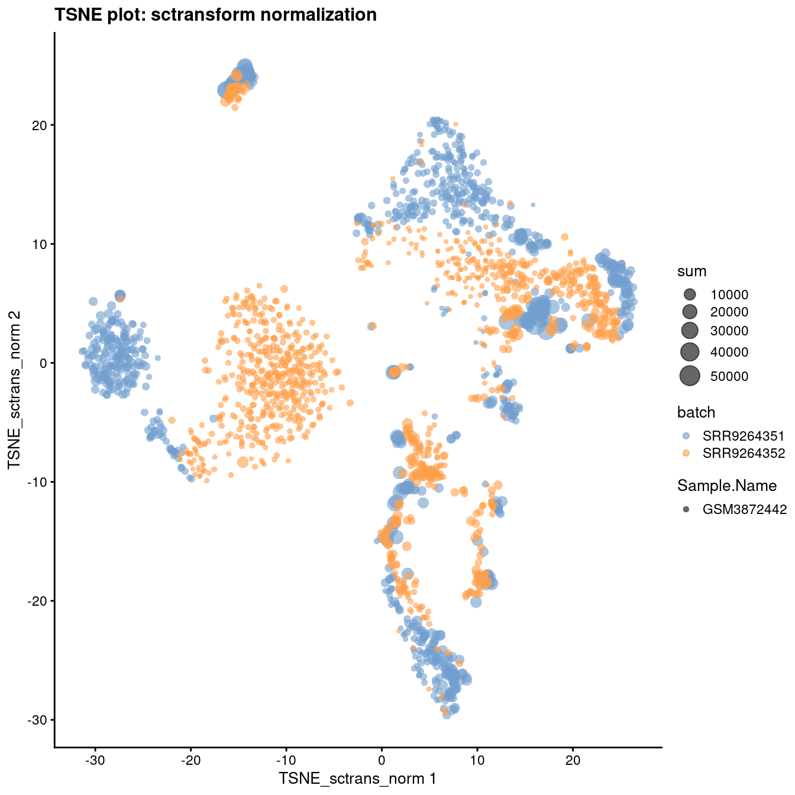
sce <- runUMAP(sce, dimred="PCA_sctrans_norm", name="UMAP_sctrans_norm")
plotReducedDim(
sce,
dimred = "UMAP_sctrans_norm",
colour_by = "batch",
size_by = "sum",
shape_by = "Sample.Name"
) + ggtitle("UMAP plot: sctransform normalization") 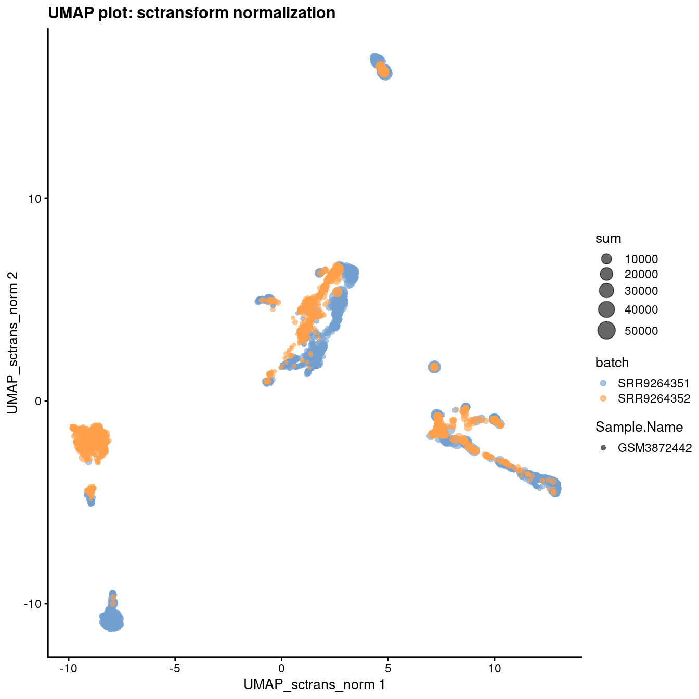
Add PCA_sctrans_norm_batchOnly (same cells, only genes may differ)
reducedDim(sce, "PCA_sctrans_norm_batchOnly") <- reducedDim(sce_batchOnly, "PCA_sctrans_norm_batchOnly")
reducedDim(sce, "TSNE_sctrans_norm_batchOnly") <- reducedDim(sce_batchOnly, "TSNE_sctrans_norm_batchOnly")
reducedDim(sce, "UMAP_sctrans_norm_batchOnly") <- reducedDim(sce_batchOnly, "UMAP_sctrans_norm_batchOnly")12.6 mnnCorrect
12.6.1 Check presence of batch effect
Same as above but with batchelor commands to make the two batches and identify highly variable genes for faster dimensionality reduction.
sce <- sample3.nz.sce
rm(sample3.nz.sce)
library(batchelor)
# Mind assayNames()
sce1 <- sce[, sce$Run == "SRR9264351"]
sce2 <- sce[, sce$Run == "SRR9264352"]library(scran)
dec1 <- modelGeneVar(sce1)
dec2 <- modelGeneVar(sce2)
combined.dec <- combineVar(dec1, dec2)
chosen.hvgs <- combined.dec$bio > 0
summary(chosen.hvgs)## Mode FALSE TRUE
## logical 7655 8974As a diagnostic, we check that there actually is a batch effect across these datasets by checking that they cluster separately. Here, we combine the two SingleCellExperiment objects without any correction using the NoCorrectParam() flag, and we informally verify that cells from different batches are separated using a t-SNE plot.
There is a moderate batch effect.
library(scater)
combined <- correctExperiments(A=sce1, B=sce2, PARAM=NoCorrectParam())
combined <- runPCA(combined, subset_row=chosen.hvgs)
combined <- runTSNE(combined, dimred="PCA")
combined <- runUMAP(combined, dimred="PCA")
plotPCA(combined, colour_by="batch")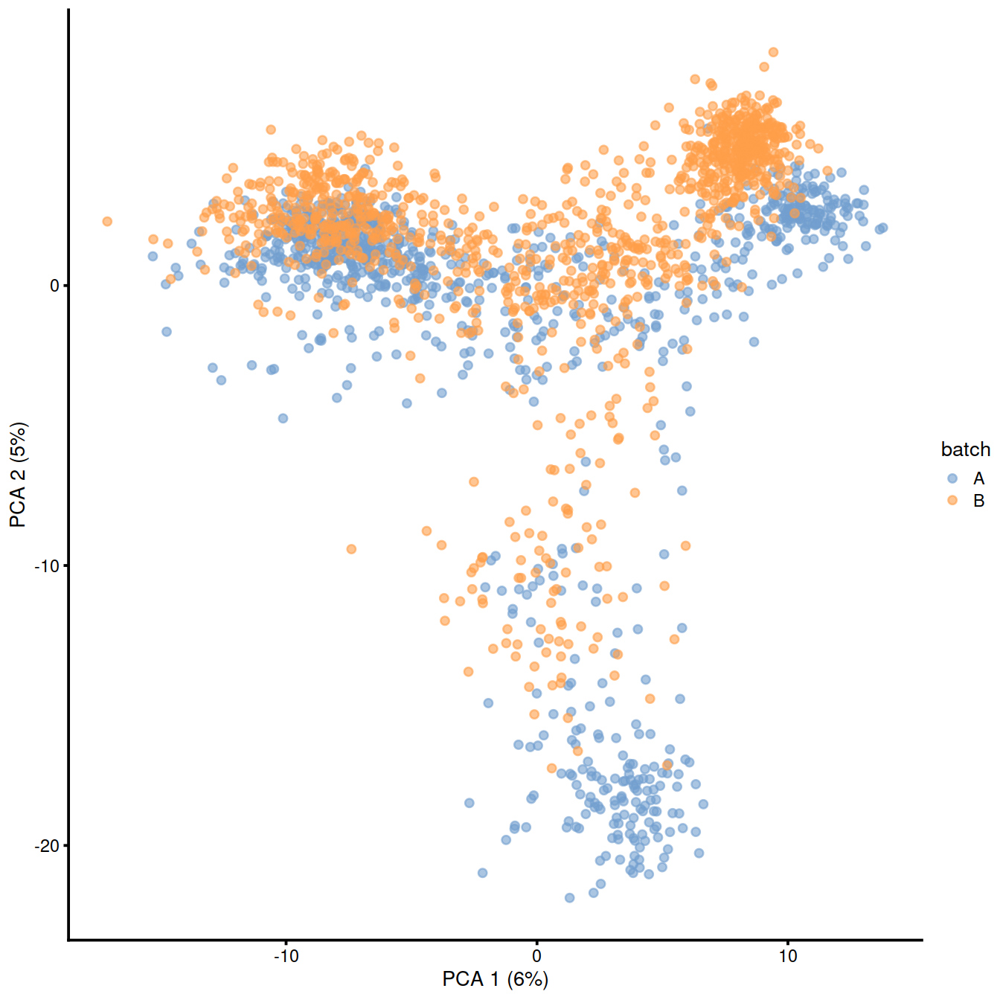
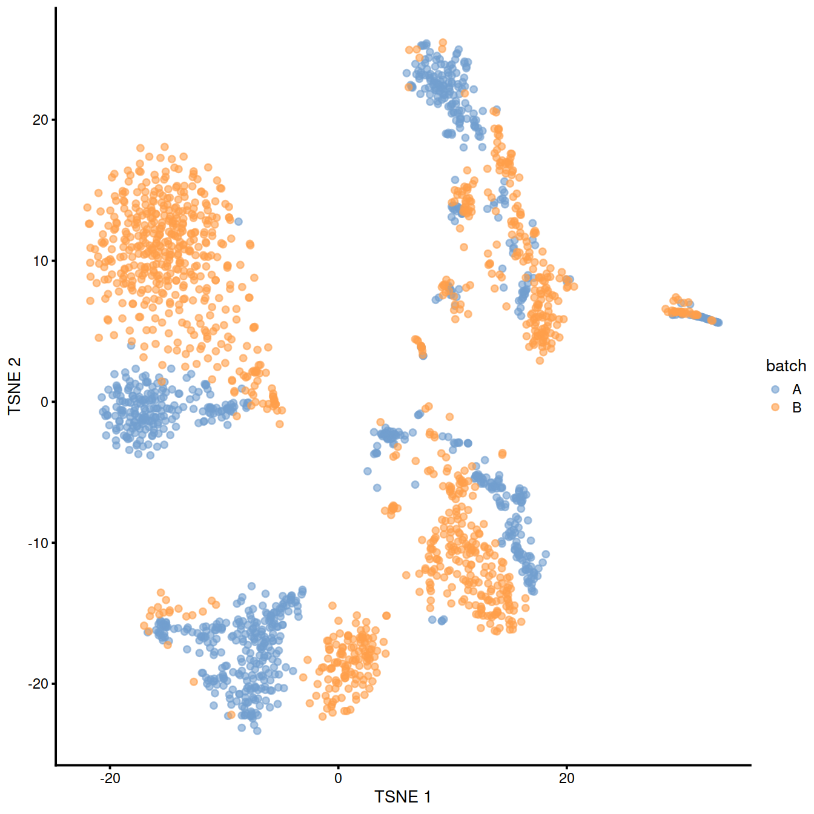
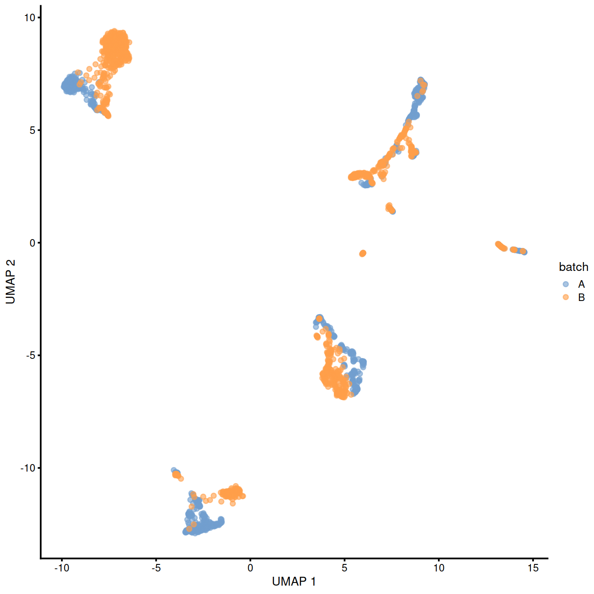
12.6.2 Correct batch effect with mnnCorrect
This is the initial method. It uses gene expression values to identify cells with similar expression patterns in both batches.
Let us get the normalised counts:
y <- batchelor::mnnCorrect(
batch1, batch2,
#subset.row = fewer.hvgs,
correct.all = TRUE,
k = 20,
sigma = 0.1,
cos.norm.in = TRUE,
svd.dim = 2
)Copy the corrected values to the SCE object:
Show reduced dimension plots and check for improved mixing of cells from the two sets:
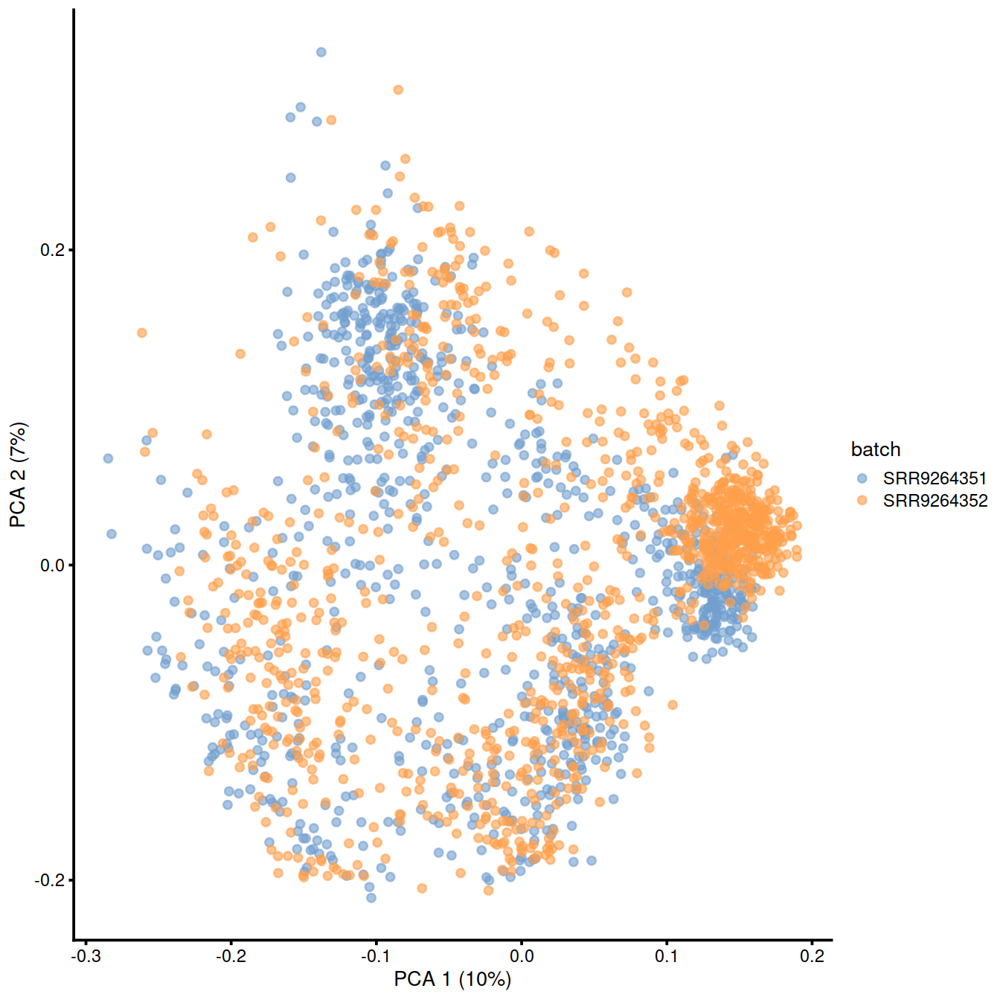
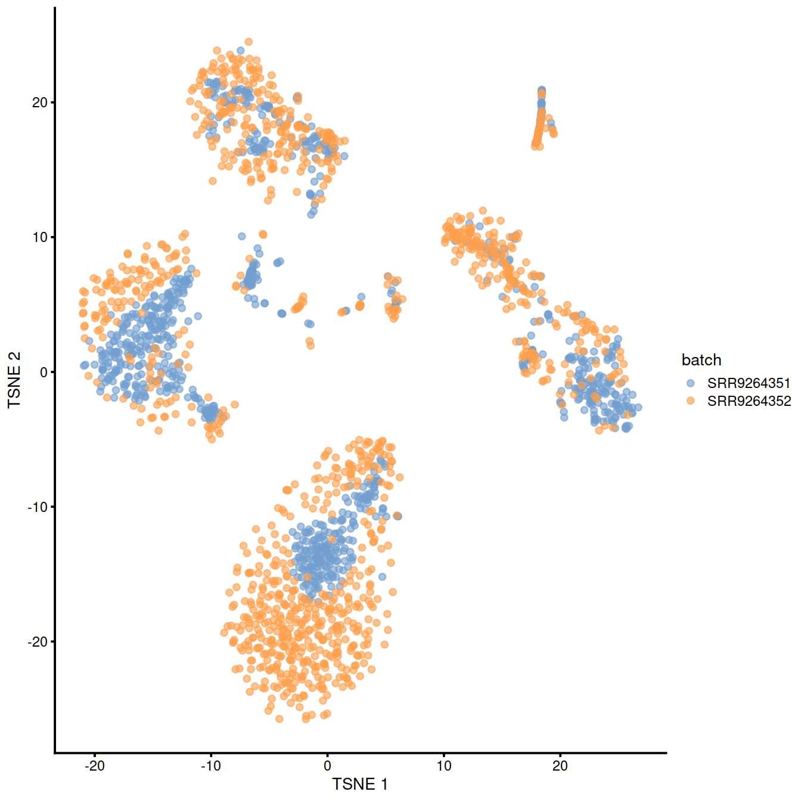
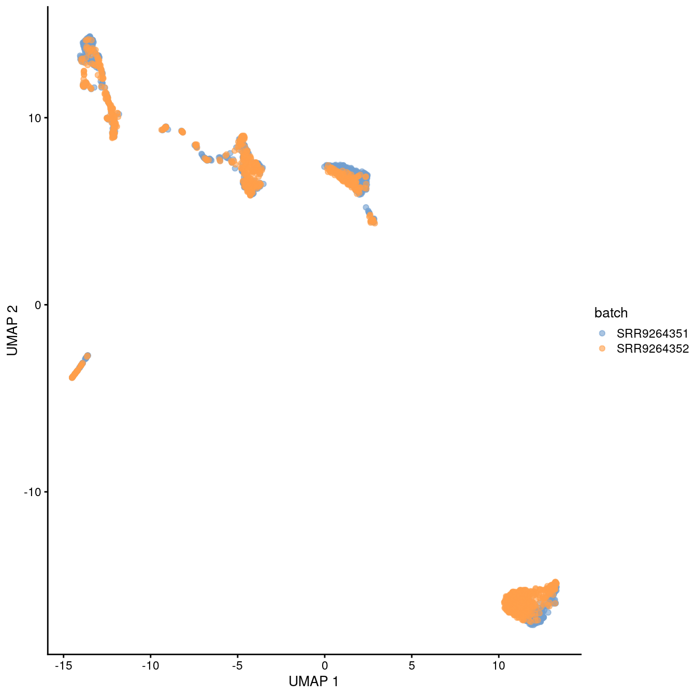
12.7 fastMNN
This method is faster than mnnCorrect as it identifies nearest neighbours after dimensionality reduction.
## [1] "SingleCellExperiment"
## attr(,"package")
## [1] "SingleCellExperiment"Copy the corrected values to the SCE object:
# fastMNN may drop some genes
# so we may not be able to keep the outcome in 'assay'
assay(sce, "fastmnn") <- assay(fx, "reconstructed")Show reduced dimension plots and check for improved mixing of cells from the two sets:
fastmnn_pca <- runPCA(assay(sce, "fastmnn"), rank=2) # slow
reducedDim(sce, "PCA_fastmnn") <- fastmnn_pca$rotation
rm(fastmnn_pca)
plotReducedDim(
sce,
dimred = "PCA_fastmnn",
colour_by = "batch",
size_by = "sum",
shape_by = "Sample.Name"
) + ggtitle("PCA plot: fastMNN") 
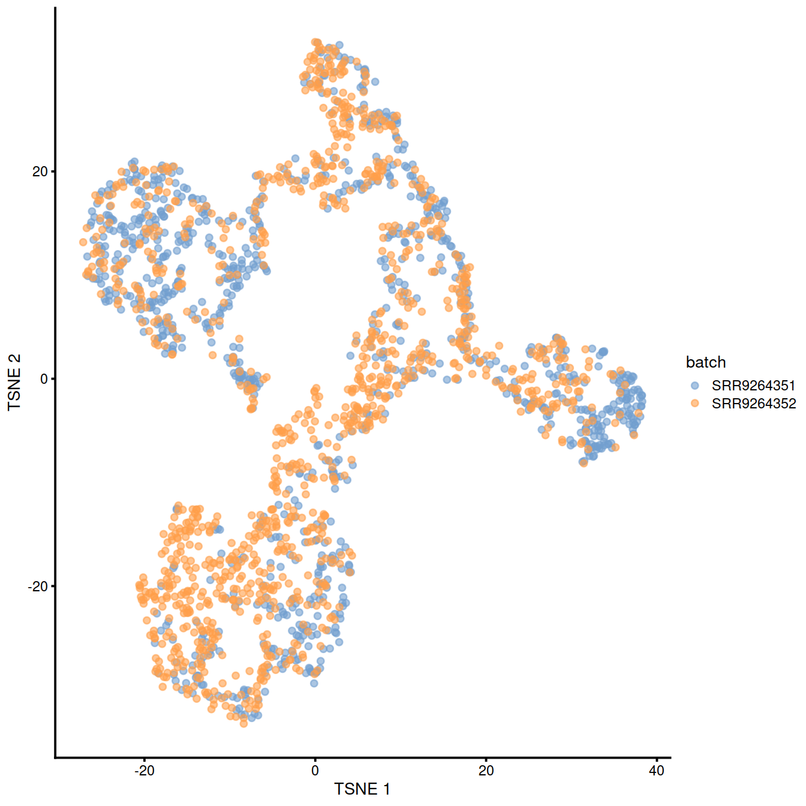
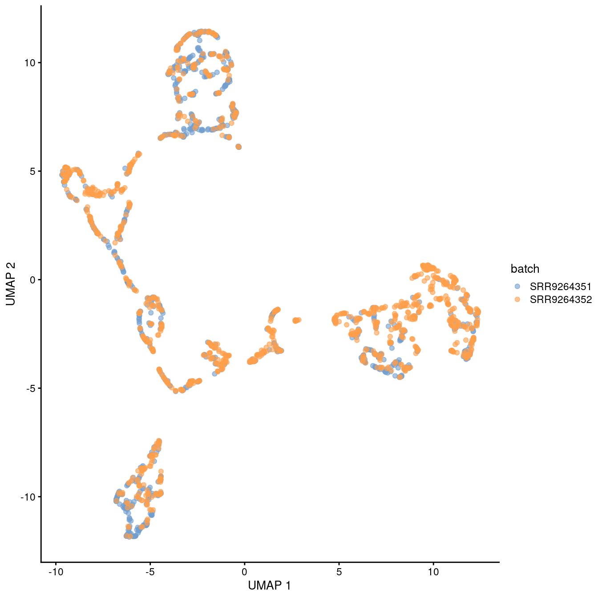
12.8 Harmony
Harmony [Korsunsky2018fast] is a newer batch correction method, which is designed to operate on PC space. The algorithm proceeds to iteratively cluster the cells, with the objective function formulated to promote cells from multiple datasets within each cluster. Once a clustering is obtained, the positions of the centroids of each dataset are obtained on a per-cluster basis and the coordinates are corrected. This procedure is iterated until convergence. Harmony comes with a theta parameter that controls the degree of batch correction (higher values lead to more dataset integration), and can account for multiple experimental and biological factors on input (see variant of the ‘Hemberg course’).
library(harmony)
reducedDim(sce, "PCA_logcounts") <- reducedDim(
runPCA(sce, exprs_values = "logcounts")
)
#Seeing how the end result of Harmony is an altered dimensional reduction space created on the basis of PCA, we plot the obtained manifold here and exclude it from the rest of the follow-ups in the section.
pca <- as.matrix(reducedDim(sce, "PCA_logcounts"))
harmony_emb <- HarmonyMatrix(pca,
sce$batch,
theta=2,
do_pca=FALSE)
reducedDim(sce, "harmony") <- harmony_emb
plotReducedDim(
sce,
dimred = 'harmony',
colour_by = "batch",
size_by = "sum",
shape_by = "Sample.Name"
)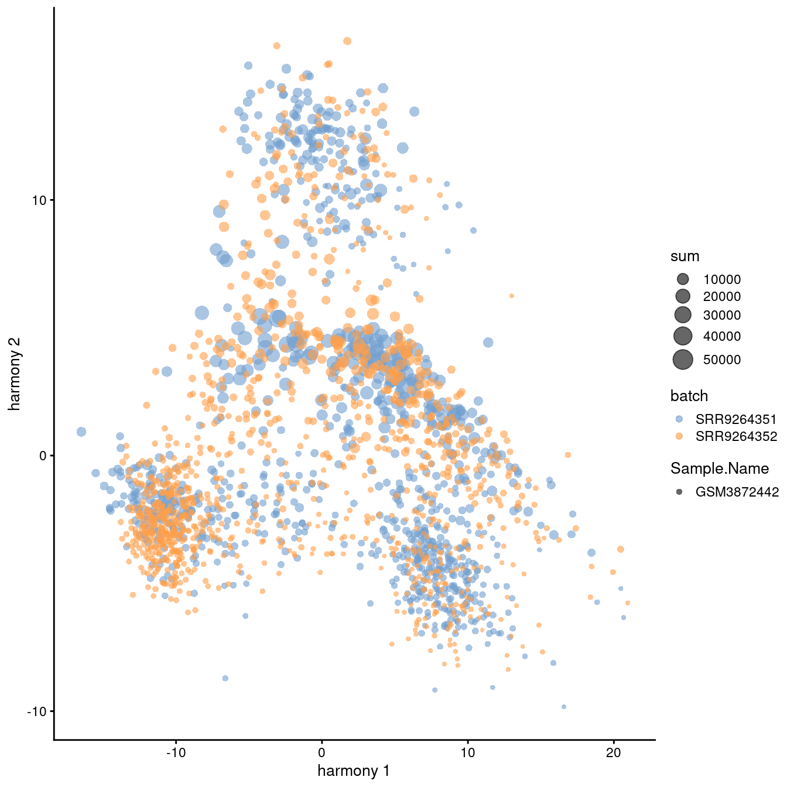
12.9 Session information
## R version 4.0.3 (2020-10-10)
## Platform: x86_64-pc-linux-gnu (64-bit)
## Running under: CentOS Linux 8
##
## Matrix products: default
## BLAS: /opt/R/R-4.0.3/lib64/R/lib/libRblas.so
## LAPACK: /opt/R/R-4.0.3/lib64/R/lib/libRlapack.so
##
## locale:
## [1] LC_CTYPE=en_GB.UTF-8 LC_NUMERIC=C
## [3] LC_TIME=en_GB.UTF-8 LC_COLLATE=en_GB.UTF-8
## [5] LC_MONETARY=en_GB.UTF-8 LC_MESSAGES=en_GB.UTF-8
## [7] LC_PAPER=en_GB.UTF-8 LC_NAME=C
## [9] LC_ADDRESS=C LC_TELEPHONE=C
## [11] LC_MEASUREMENT=en_GB.UTF-8 LC_IDENTIFICATION=C
##
## attached base packages:
## [1] parallel stats4 stats graphics grDevices utils datasets
## [8] methods base
##
## other attached packages:
## [1] harmony_1.0 Rcpp_1.0.6
## [3] batchelor_1.6.3 SeuratObject_4.0.0
## [5] Seurat_4.0.1 limma_3.46.0
## [7] ggfortify_0.4.11 BiocSingular_1.6.0
## [9] scuttle_1.0.4 robustbase_0.93-7
## [11] mixtools_1.2.0 dplyr_1.0.5
## [13] DT_0.18 irlba_2.3.3
## [15] biomaRt_2.46.3 Matrix_1.2-18
## [17] igraph_1.2.6 DropletUtils_1.10.3
## [19] scater_1.18.6 ggplot2_3.3.3
## [21] scran_1.18.7 SingleCellExperiment_1.12.0
## [23] SummarizedExperiment_1.20.0 Biobase_2.50.0
## [25] GenomicRanges_1.42.0 GenomeInfoDb_1.26.7
## [27] IRanges_2.24.1 S4Vectors_0.28.1
## [29] BiocGenerics_0.36.1 MatrixGenerics_1.2.1
## [31] matrixStats_0.58.0 knitr_1.32
##
## loaded via a namespace (and not attached):
## [1] utf8_1.2.1 reticulate_1.18
## [3] R.utils_2.10.1 tidyselect_1.1.0
## [5] RSQLite_2.2.6 AnnotationDbi_1.52.0
## [7] htmlwidgets_1.5.3 grid_4.0.3
## [9] BiocParallel_1.24.1 Rtsne_0.15
## [11] munsell_0.5.0 codetools_0.2-16
## [13] ica_1.0-2 statmod_1.4.35
## [15] future_1.21.0 miniUI_0.1.1.1
## [17] withr_2.4.2 colorspace_2.0-0
## [19] highr_0.8 rstudioapi_0.13
## [21] ROCR_1.0-11 tensor_1.5
## [23] listenv_0.8.0 labeling_0.4.2
## [25] GenomeInfoDbData_1.2.4 polyclip_1.10-0
## [27] bit64_4.0.5 farver_2.1.0
## [29] rhdf5_2.34.0 parallelly_1.24.0
## [31] vctrs_0.3.7 generics_0.1.0
## [33] xfun_0.22 BiocFileCache_1.14.0
## [35] R6_2.5.0 ggbeeswarm_0.6.0
## [37] rsvd_1.0.3 locfit_1.5-9.4
## [39] isoband_0.2.4 spatstat.utils_2.1-0
## [41] bitops_1.0-6 rhdf5filters_1.2.0
## [43] cachem_1.0.4 DelayedArray_0.16.3
## [45] assertthat_0.2.1 promises_1.1.1
## [47] scales_1.1.1 beeswarm_0.2.3
## [49] gtable_0.3.0 beachmat_2.6.4
## [51] globals_0.14.0 goftest_1.2-2
## [53] rlang_0.4.10 splines_4.0.3
## [55] lazyeval_0.2.2 spatstat.geom_2.1-0
## [57] abind_1.4-5 yaml_2.2.1
## [59] reshape2_1.4.4 httpuv_1.5.5
## [61] tools_4.0.3 bookdown_0.21
## [63] spatstat.core_2.1-2 ellipsis_0.3.1
## [65] jquerylib_0.1.3 RColorBrewer_1.1-2
## [67] ggridges_0.5.3 plyr_1.8.6
## [69] sparseMatrixStats_1.2.1 progress_1.2.2
## [71] zlibbioc_1.36.0 purrr_0.3.4
## [73] RCurl_1.98-1.3 prettyunits_1.1.1
## [75] rpart_4.1-15 deldir_0.2-10
## [77] openssl_1.4.3 pbapply_1.4-3
## [79] viridis_0.5.1 cowplot_1.1.1
## [81] zoo_1.8-9 ggrepel_0.9.1
## [83] cluster_2.1.0 magrittr_2.0.1
## [85] scattermore_0.7 data.table_1.14.0
## [87] RSpectra_0.16-0 ResidualMatrix_1.0.0
## [89] lmtest_0.9-38 RANN_2.6.1
## [91] fitdistrplus_1.1-3 patchwork_1.1.1
## [93] xtable_1.8-4 mime_0.10
## [95] hms_1.0.0 evaluate_0.14
## [97] XML_3.99-0.5 gridExtra_2.3
## [99] compiler_4.0.3 tibble_3.1.1
## [101] KernSmooth_2.23-17 crayon_1.4.1
## [103] R.oo_1.24.0 htmltools_0.5.1.1
## [105] mgcv_1.8-33 segmented_1.3-3
## [107] later_1.1.0.1 tidyr_1.1.3
## [109] DBI_1.1.1 dbplyr_2.0.0
## [111] MASS_7.3-53 rappdirs_0.3.1
## [113] readr_1.4.0 R.methodsS3_1.8.1
## [115] pkgconfig_2.0.3 spatstat.sparse_2.0-0
## [117] plotly_4.9.3 xml2_1.3.2
## [119] vipor_0.4.5 bslib_0.2.4
## [121] dqrng_0.2.1 XVector_0.30.0
## [123] stringr_1.4.0 digest_0.6.27
## [125] sctransform_0.3.2.9005 RcppAnnoy_0.0.18
## [127] spatstat.data_2.1-0 rmarkdown_2.7
## [129] leiden_0.3.7 uwot_0.1.10
## [131] edgeR_3.32.1 DelayedMatrixStats_1.12.3
## [133] curl_4.3 kernlab_0.9-29
## [135] shiny_1.5.0 nlme_3.1-149
## [137] lifecycle_1.0.0 jsonlite_1.7.2
## [139] Rhdf5lib_1.12.1 BiocNeighbors_1.8.2
## [141] viridisLite_0.3.0 askpass_1.1
## [143] fansi_0.4.2 pillar_1.6.0
## [145] lattice_0.20-41 fastmap_1.1.0
## [147] httr_1.4.2 DEoptimR_1.0-8
## [149] survival_3.2-7 glue_1.4.2
## [151] FNN_1.1.3 png_0.1-7
## [153] bluster_1.0.0 bit_4.0.4
## [155] stringi_1.5.3 sass_0.3.1
## [157] HDF5Array_1.18.1 blob_1.2.1
## [159] memoise_2.0.0 future.apply_1.7.0